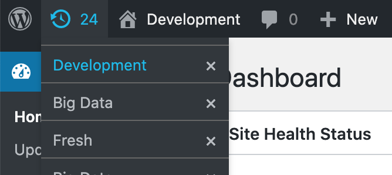

How SnapShots works.
Save a named copy of your development site before you try something. Come back to that copy when the try goes wrong.
SnapShots is free and built for quick rollbacks, not backups. Use it mainly on local, development, and staging sites while you build and test. Keep separate backups for production and disaster recovery.
One example, start to finish
You are about to import two thousand products on a staging site. If the import is wrong, you want yesterday's catalog back, not a weekend of cleanup.
Before. Open the admin bar, create a snapshot, and
name it Before the product import.
During. Run the import. Products, orders, and media change. That is the experiment.
After, if you need to go back. Open the same menu, choose that snapshot, and confirm. The database returns to the saved copy. Uploads return too, when the snapshot included files.
The plugin you installed after the snapshot is still on disk. SnapShots does not put plugins, themes, or WordPress core back. Only the database, and uploads when they were saved.
From the WordPress admin

Only a user who can manage options can create, restore, or delete a snapshot.
Create one
In the admin bar, choose the prompt to create a snapshot. The suggested
name is the current snapshot, or the site title when none is current.
Type a name you will recognize later, such as
Before the product import.
The menu can search snapshots by name.
Come back to the same screen
When you restore from the admin, SnapShots can remember the page you
were on, including the part of the address after #, and
send you back there. This is on by default. Turn it off under
Settings → Snapshots if you do not want it. SnapShots
also keeps you logged in as the same user after a restore.
The list on the Tools screen
Tools → Snapshots lists every snapshot with its name, when it was created, when it was last used, and where it is saved. Select several rows to delete them together. The Plugins screen and the admin bar both link to Settings → Snapshots.
From the command line
The same work from the WordPress root, the folder that contains
wp-config.php:
wp snapshot backup "Before the product import" --files wp snapshot list wp snapshot restore before-the-product-import_1587039434
backup stores the words you typed. The folder on disk is a
slug plus the time it was saved. For this name the folder looks like
before-the-product-import_1587039434.
list shows both. name is the text you typed.
file is the folder id. Pass that exact folder id to restore
or delete so the command selects the intended snapshot. They do not find
Before the product import, because of the capitals and
spaces.
wp snapshot restore before-the-product-import_1587039434 wp snapshot delete before-the-product-import_1587039434
The full folder id selects that one copy. In the admin bar you do not type this. A click already uses the folder id.
Two optional flags on backup:
-
--filesincludes the uploads folder. The settings screen can include files by default. Pass the flag when you want this command to include them. -
--location=wp-admin/plugins.phpstores a return address for after restore. -
--exclude_tables=table_one,table_twoleaves those tables out of this snapshot. Use the real table names, separated by commas.
From the Abilities API
On WordPress 6.9 or newer, SnapShots also registers public abilities so
agents and tools can list, create, restore, and delete snapshots through
the Abilities API (for example wp-abilities/v1). The same
manage_options capability applies. The abilities are
snapshots/list, snapshots/backup,
snapshots/restore, and snapshots/delete. Prefer
the exact file folder id from list when restoring or
deleting. See the
agent guide for inputs and workflow.
What is inside a snapshot
Each snapshot is a folder on this server. It holds:
-
dump.sql, a database export of the site tables, except tables you excluded. -
data.zip, the uploads directory, when files were saved. Saving files is on by default. -
manifest.json, with the name, the created time, the last used time, and the return address when one was stored.
Zip files are written with PHP's ZipArchive, or with PclZip when ZipArchive is missing.
What a restore actually does
A restore is not a preview. It replaces data on this server.
- The database is loaded from
dump.sql. - Tables that use this site's prefix and are not in the snapshot are dropped. A table created after the snapshot disappears.
-
The uploads folder is replaced only when that snapshot has
data.zip. - Plugins, themes, and WordPress core stay as they are on disk. Code can be newer than the database you just restored.
-
If the home URL inside the snapshot is different from the current
home URL, restore runs a search-replace to the current URL. Moving a
snapshot from
https://staging.exampleontohttps://local.exampleupdates the addresses in the database.
Names, slugs, and old copies
Use a name that says what you are about to risk.
Before the product import is useful.
test is not, once you have three of them.
The slug is that name in lowercase, with spaces turned into hyphens:
before-the-product-import. The folder id adds an underscore
and the time: before-the-product-import_1587039434.
The name must produce a URL-safe slug that starts with a letter or
number (ASCII letters, digits, hyphens, underscores). Names that
sanitize to nothing, or only to percent-encoded characters, are
rejected.
Two copies of the same name are kept, unless you change
Max shots. Saving a third
Before the product import deletes the oldest of that name.
Other names are left alone.
Where snapshots live
The default folder is wp-content/.snapshots. Change it
under Settings → Snapshots, or in
wp-config.php. A constant wins over the value saved in the
database.
define( 'SNAPSHOTS_FOLDER', WP_CONTENT_DIR . '/.snapshots' ); define( 'SNAPSHOTS_MAX_SHOTS', 2 ); define( 'SNAPSHOTS_CLI_PATH', '/usr/local/bin' ); define( 'SNAPSHOTS_PHP_PATH', '/usr/local/bin' );
SNAPSHOTS_CLI_PATH and SNAPSHOTS_PHP_PATH are
directories. They are the folder that contains wp or
php, not the file itself.
SNAPSHOTS_CLI_PATH is not a field on the settings screen.
Set it in wp-config.php when wp is outside the
server's search path.
The settings screen also controls:
- Whether uploads are included.
- Whether the return address is stored.
- Which database tables to leave out, as a comma-separated list.
- Whether the list is sorted by last used or by created date.
- Whether WP-CLI may run as root. Leave that off unless the commands have to run as root.
A developer can change any of those with a filter named
snapshots_{option}. For example,
snapshots_max_shots can force five copies:
add_filter( 'snapshots_max_shots', function () {
return 5;
} );
Constants in wp-config.php are still there after a restore.
Settings that live only in the database are part of the database
snapshot, so a restore can bring those saved values back.
What the site needs
SnapShots runs wp snapshot for every save, restore, and
delete. The site needs:
-
WP-CLI 2.2 or newer, and a web
server that can run the
wpbinary. -
PHP
exec(). If the host disables it, there is no other way to run the command. -
A
phpbinary the web server can find. Whenwhich phpfails, setSNAPSHOTS_PHP_PATHto the directory fromdirname $(which php).
Activation stops with an error when exec, PHP, or WP-CLI
is missing. Hosts that block the shell, including many WordPress.com
plans, cannot use the plugin.
It has been tested with Local. Local often reaches MySQL through a
socket. If WP-CLI cannot talk to the database, set
DB_HOST to localhost: plus that site's socket
path:
define( 'DB_HOST', 'localhost:/absolute/path/to/mysql/mysqld.sock' );
What this is not
SnapShots is not a backup tool. It is a quick way to move a development
site back to an earlier stage while you build and test. Each checkpoint
stays on the same server in wp-content/.snapshots unless
you move that folder. Nothing is uploaded to another service.
Use it while you build and test. Keep a separate off-site backup of anything you cannot afford to lose. A restore overwrites the current site. It is not a read-only look at an old state, and it is not a disaster-recovery plan for production.